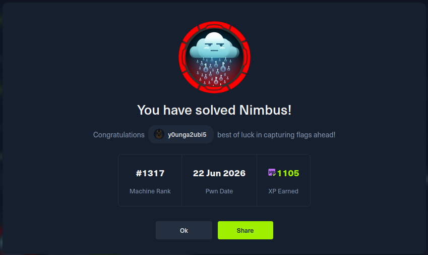

{% raw %}
<div class="wrapper">

    <div class="back-row">
      <a class="back-link" href="../writeups.html">← Retour aux analyses</a>
    </div>
    <div class="hero">
      <span class="hero-category">HackTheBox - Cloud / Linux</span>
      <h1>Nimbus</h1>
      <p class="hero-sub">
        A cloud-focused Linux machine chaining a web entry point into local cloud permissions, an internal worker
        context, and a containerized build boundary.
      </p>
      <div class="hero-meta">
        <span class="tag tag-cat">Cloud</span>
        <span class="tag tag-cat">Linux</span>
        <span class="tag tag-hard">Hard</span>
      </div>
    </div>
    <!-- TODO when publishing: remove noindex, add this page to sitemap.xml, replace À venir status badges, and restore normal listing link text. -->
    <div class="pending-section">
      <div class="pending-lock">&#128274;</div>
      <h2 class="pending-title">Writeup à venir</h2>
      <p class="pending-msg">Cette machine est encore active sur HackTheBox. Le writeup sera publié dès son retrait de la plateforme.</p>
      <div class="pending-proof">
        <p class="proof-label">Preuve de résolution</p>
        
      </div>
    </div>

  </div>
{% endraw %}
